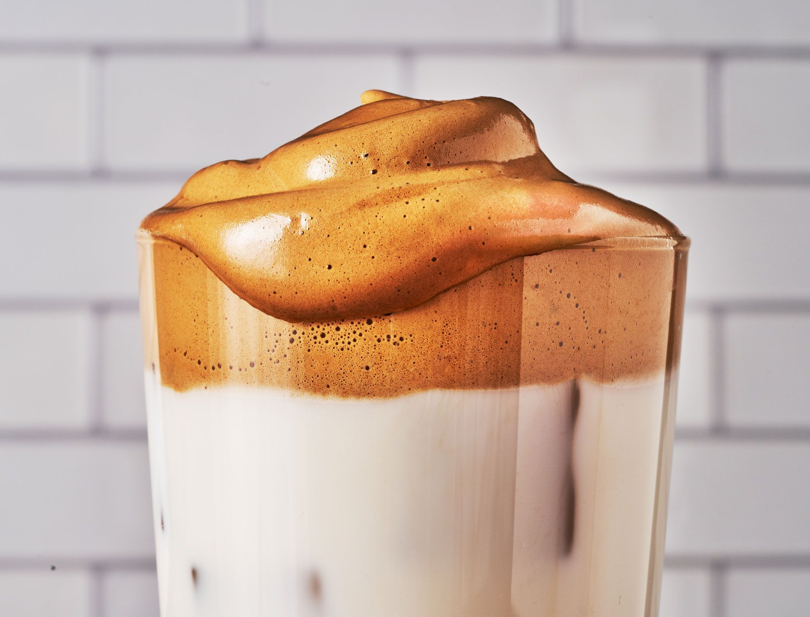

Dalgona Coffee

Description
Look, if you haven't heard of dalgona coffee by now, you must be living under a rock. This fluffy drink has been EVERYWHERE on the internet for the last year. It takes some time to make, and you probably won't be whipping them up on a busy weekday, but it's a great way to elevate your regular cup of coffee into something special. And as a bonus, you probably already have all of the ingredients in your pantry already! Dalgona coffee is best when it's freshly made, as the foamy head deflates quickly - but trust me, once you make it, you're going to want to drink it immediately.
Ingredients
- 2 tablespoons granulated sugar
- 2 tablespoons instant coffee
- 2 tablespoons cold water
- Ice, for serving
- Milk of your choice, for serving
Steps
- In a medium bowl, combine sugar, coffee, and water. Using a hand mixer or a whisk, vigorously whisk until mixture turns silky smooth and shiny, then continue whisking until it thickens and holds its lofty, foamy shape. (If whisking by hand, it will take 8 to 12 minutes to get to optimal fluffiness.)
- Fill a glass most of the way full with ice and milk, then dollop and swirl the whipped coffee mixture on top, mixing before drinking, if desired.
Recipe and image courtesy of Delish.com